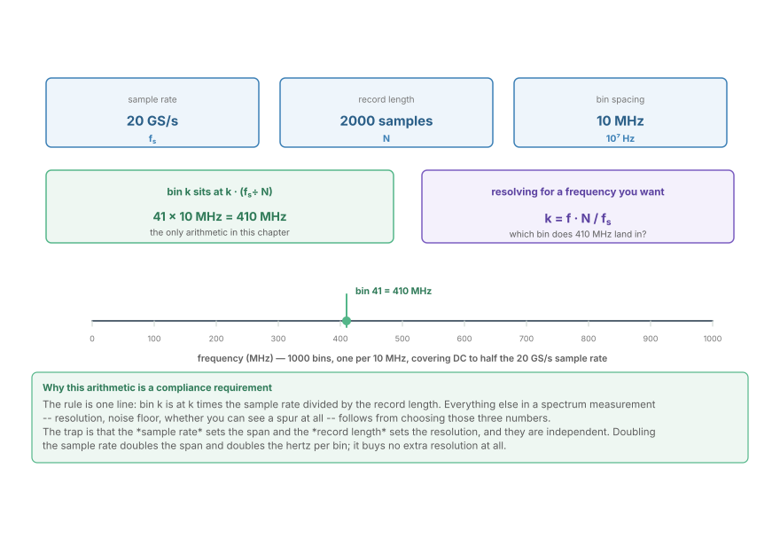
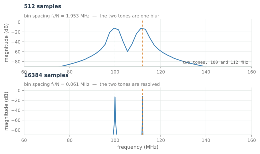
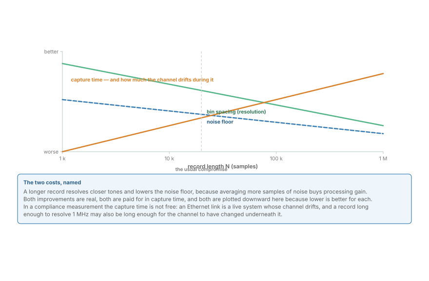
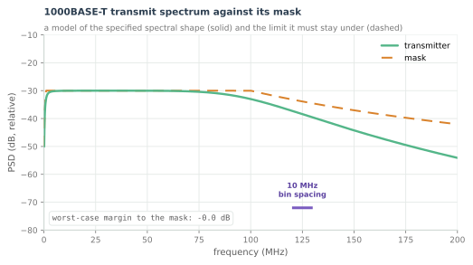

The FFT and DFT in Ethernet Compliance
The DFT is not a chapter you leave behind, it is the instrument: bin index to hertz, the transmit spectral mask, the equaliser response, and S-parameters pulled back into the time domain.
This is the chapter where part two of the course stops being mathematics and becomes an instrument. A spectrum analyser, a vector network analyser, and the compliance software inside a real-time oscilloscope are all computing the discrete Fourier transform, and the DFT is the same transform derived in The FFT: How It Got Fast. What changes here is not the transform but the three numbers you feed it -- sample rate, record length, and window -- and the fact that those three numbers are on a test report.
Ethernet is where that matters most, because so much of what a standard constrains is a frequency-domain quantity: the transmit spectral mask, the channel's insertion loss and return loss, crosstalk, and the equaliser's own response. A time-domain eye certificate and a frequency-domain mask certificate are two views of one link, and the DFT is the bridge.
The one line of arithmetic
Everything begins with a single relationship, and it is the piece of arithmetic most often got wrong on a bench.

An $N$-point DFT of a record sampled at $f_s$ produces $N$ bins spanning DC to $f_s$, spaced by
Three consequences, all of which show up on a test report:
- The sample rate sets the span. A 20 GS/s scope can show you content up to 10 GHz, because the transform is periodic and the second half of the record mirrors the first.
- The record length sets the resolution. Ten times longer record means ten times finer bins, and no change to the span.
- They are independent. Doubling the sample rate doubles the span and doubles the hertz per bin. It buys no resolution whatsoever, which is the mistake the diagram exists to prevent.
Resolution is a measurement requirement, not a preference
A compliance mask with a sharp corner at a specified frequency cannot be verified with a transform whose bins are wider than the feature. The resolution has to be chosen from what you are trying to see.

The figure runs the same two-tone signal through the same DFT twice, changing only $N$. At 60 MHz of resolution the two tones are one blur and the measurement would report a single spur at the wrong frequency. At 61 kHz they are resolved, and the bin they land in is meaningful.
Two more facts about the transform matter for compliance, and both are properties of the window rather than the data:
- Leakage is real and it is a windowing artefact. A tone that does not fall exactly on a bin spreads energy into its neighbours, and that spread can be mistaken for a spur. Rectangular windows leak most; Hann and Blackman-Harris leak less at the cost of wider main lobes.
- The noise floor falls with a longer record. Averaging more samples of noise buys processing gain, roughly $10\log_{10}N$ decibels. That is why a mask measurement that looks noise-limited at one record length becomes clean at ten times the length.

The third curve on that figure is the one that is easy to forget: capture time. In a compliance measurement the link is live, and a record long enough to resolve a fine feature may also be long enough for the channel to have changed underneath it. The usual compromise is a few thousand to a few tens of thousands of points, chosen so the shortest feature of interest is several bins wide.
The transmit spectral mask
Ethernet constrains the shape of what a transmitter emits, and the constraint is a mask on the power spectral density. The DFT is what measures it.

The figure is a model of the specified shape rather than a measured port, and it shows the structure every Ethernet spectral mask has:
- A high-pass corner at low frequency. Ethernet is AC-coupled, so the spectrum must roll off below a few megahertz. A transmitter that emits too much energy near DC is wasting power and causing baseline wander in every receiver on the link.
- A flat region in the middle. This is where the signal lives, and where the mask is set by emissions regulation as much as by signal integrity.
- A steep roll-off above the Nyquist frequency. Content above Nyquist cannot be recovered; it can only interfere with neighbouring channels. The mask makes it expensive to create.
A real measurement adds three things this model does not have, and each is a place where a lab gets the wrong answer:
- The mask is defined in a stated bandwidth. A power spectral density in dBm/MHz is not comparable to one in dBm/100 kHz, and standards state which. This is the same reference-discipline as Decibels and Dynamic Range.
- The measurement bandwidth must be narrower than the mask's features. A resolution bandwidth wider than the roll-off corner reports a corner that does not exist.
- The detector matters. Peak, average and quasi-peak detectors report different numbers for the same signal, and the standard says which one applies.
The channel and the equaliser, in the frequency domain
The transmitter is only half of the frequency-domain story. The channel's response and the equaliser's response are the other half, and they are naturally measured as complex functions of frequency.
Insertion loss, return loss and crosstalk are usually obtained from a vector network analyser as S-parameters: the complex ratios of incident and reflected waves at each port, per frequency. A four-pair Ethernet link is an eight-port network, and its full S-parameter set is a large matrix -- but the parts a link budget cares about are the forward transmission (insertion loss) and the input reflection (return loss).
From the S-parameters, the same DFT machinery produces the things a time-domain engineer wants:
- The impulse response is the inverse DFT of the transfer function. This is how a channel model is obtained for simulation, and it is exactly the operation in Convolution, and Why Every DSP Block Is One: multiplication in the frequency domain is convolution in time.
- The equaliser's target response is the reciprocal of that transfer function over the band of interest, which is the mirror picture from the link-budget chapter, now as complex data rather than a sketch.
- Group delay, the negative derivative of phase with respect to frequency, is where a channel's dispersive behaviour shows up. It is phase and group-delay territory, applied to a cable.
A worked measurement
Take the 1000BASE-T example from the first figure and follow it through as a bench procedure.
- Settings. $f_s$ = 20 GS/s, $N$ = 2000 samples, so $\Delta f$ = 10 MHz per bin, over a span of DC to 10 GHz.
- A spur at 410 MHz. It is bin 41, the 42nd bin counting from DC.
- The mask is specified in dBm/MHz. Each bin is 10 MHz wide at this setting, so a bin's power is 10 dB above its density. Reporting the bin power as a density is a 10 dB error, in the optimistic direction if the limit is a maximum.
- The spur is 45 dB below the carrier. Both are read from the same transform, so the ratio is unaffected by the window and the span -- which is why relative measurements are more robust than absolute ones.
Every one of those steps is arithmetic from the one line at the top of the chapter, and every one of them is a place where a report can be wrong while looking entirely reasonable.
Where this connects
- The DFT is the instrument behind the spectrum, the channel response, and the equaliser's target; the bin spacing is $f_s/N$ and nothing else.
- Resolution is set by record length, the span by sample rate, and the noise floor by both. All three are on a test report.
- The spectral mask constrains the transmitter; S-parameters constrain the channel; together they are the frequency-domain half of the link budget.
- Magnitude without phase is not a channel model, because convolution needs both.
- The time-domain view of the same link is the eye diagram, and the next chapter puts both views into one procedure.
In the optical link
The frequency-domain equaliser is this chapter's DFT, deployed in silicon. Chromatic Dispersion and the Frequency-Domain Equaliser takes an FFT of a block of samples, multiplies by the inverse of the fibre's dispersion response, and transforms back. The measurement procedure here -- get the complex response, invert it, check the residual -- is that equaliser's design procedure, performed once at the bench instead of continuously in hardware.
The block size is the resolution, and it costs latency. A frequency-domain equaliser's FFT length sets how finely it can resolve the dispersion curve, and therefore how much residual dispersion is left. That trade is identical to the one in the resolution figure: more points buy finer correction and more delay.
And the mask has an optical analogue. An optical transmitter is specified by its eye mask and by its OSNR, and its spectrum is constrained by the grid and by neighbouring-channel crosstalk. The instrument that verifies it is an optical spectrum analyser rather than a scope FFT, but the arithmetic -- resolution bandwidth, reference bandwidth, relative measurement -- is unchanged.
One difference is worth naming. In copper, phase is usually described by S-parameters and handled by convolution. In optics, phase is the dominant impairment -- dispersion, polarisation rotation, laser linewidth -- and the frequency-domain view is not an alternative but the primary one. That is why this chapter's transform shows up in the optical part as a core datapath block rather than as a measurement tool.